IR Pipeline v6.6
This page explains the v6.6 pipeline using visuals that match how the engine actually builds and runs models today. The goal is clarity: templates are declarative, IR is dynamic, and codegen is intentionally dumb.
See
v7-backprop-ir.html for IR1/IR2 + layout/codegen training flow, canary diagnostics, and oracle parity runbook.
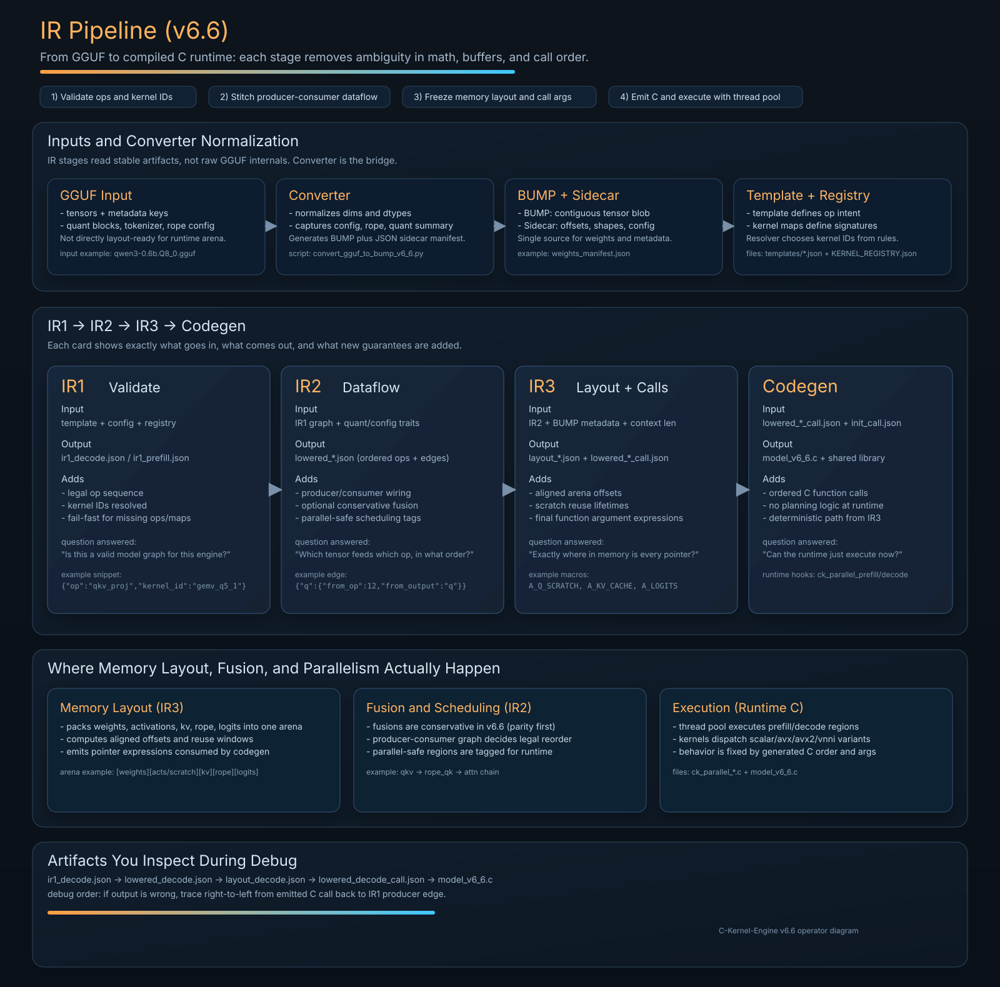
Read This Diagram in 30 Seconds
- IR1 validates template logic and resolves kernel IDs
- IR2 is where producer/consumer wiring, conservative fusion, and parallel-safe scheduling are decided
- IR3 freezes memory layout (arena offsets + pointer expressions) and emits call-ready arguments
- Runtime C executes that fixed plan using thread-pool orchestration and ISA dispatch (scalar/AVX/AVX2/VNNI)
If you forget where a bug belongs: dataflow issues usually originate in IR2, offset/alias issues in IR3, and call-order issues in codegen/runtime glue.
Operator Start Here (Snapshot: February 11, 2026)
If you revisit this page in six months, begin with the gate entrypoint first. It encodes the current v6.6 release contract better than any prose summary.
One Command First
make v6.6-gate
This runs kernel-map sync, tooling contracts, matrix smoke, parity matrix (runtime-optional), and long-decode stability in sequence.
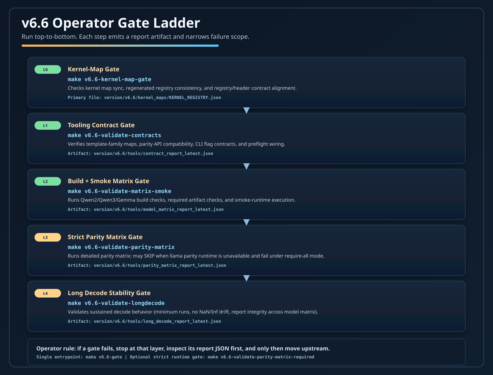
Runtime Modes and Preconditions
v6.6 operates in two practical modes: build-smoke mode and full-parity mode. Full parity requires llama parity runtime artifacts; without them, strict parity gates can report SKIP and fail under --require-all.
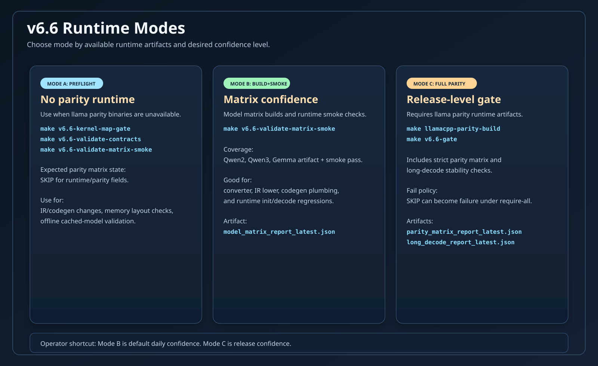
Minimal Preflight (No Parity Runtime)
make v6.6-kernel-map-gate make v6.6-validate-contracts make v6.6-validate-matrix-smoke
Use this path to validate IR/codegen/build stability without parity runtime binaries.
Full Release Gate (Parity Required)
make llamacpp-parity-build make v6.6-gate make v6.6-validate-parity-matrix-required
Use this path before release claims that depend on strict CK vs llama parity confidence.
Fast Failure Triage
Do not read all logs linearly. Start from the first failed gate, open the corresponding JSON report, then move upstream to the producer script.
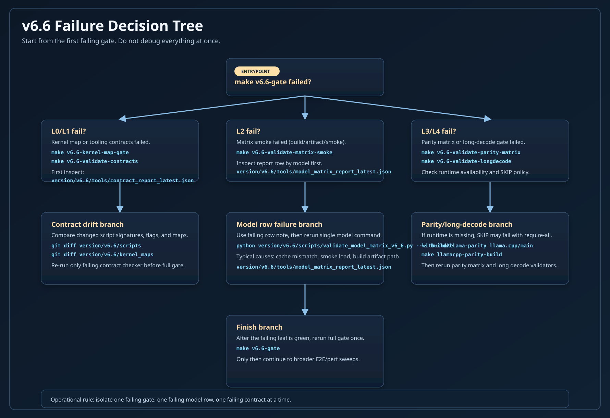
| Gate | Command | First File to Inspect |
|---|---|---|
| L0 Kernel map sync | make v6.6-kernel-map-gate |
version/v6.6/kernel_maps/KERNEL_REGISTRY.json |
| L1 Tooling contracts | make v6.6-validate-contracts |
version/v6.6/tools/contract_report_latest.json |
| L2 Matrix smoke | make v6.6-validate-matrix-smoke |
version/v6.6/tools/model_matrix_report_latest.json |
| L3 Parity matrix (runtime-optional) | make v6.6-validate-parity-matrix |
version/v6.6/tools/parity_matrix_report_latest.json |
| L3R Strict parity matrix (runtime-required) | make v6.6-validate-parity-matrix-required |
version/v6.6/tools/parity_matrix_report_latest.json |
| L4 Long decode stability | make v6.6-validate-longdecode |
version/v6.6/tools/long_decode_report_latest.json |
Live Gate Status (From JSON Reports)
This panel reads the latest v6.6 gate artifacts from version/v6.6/tools/*.json and summarizes gate health at a glance.
v6.6 Gate Dashboard
Loading gate reports...
Validation + Test Gates (Detailed View)
This stack diagram shows what each gate validates, where it runs, and how failures surface in artifacts and CI output.
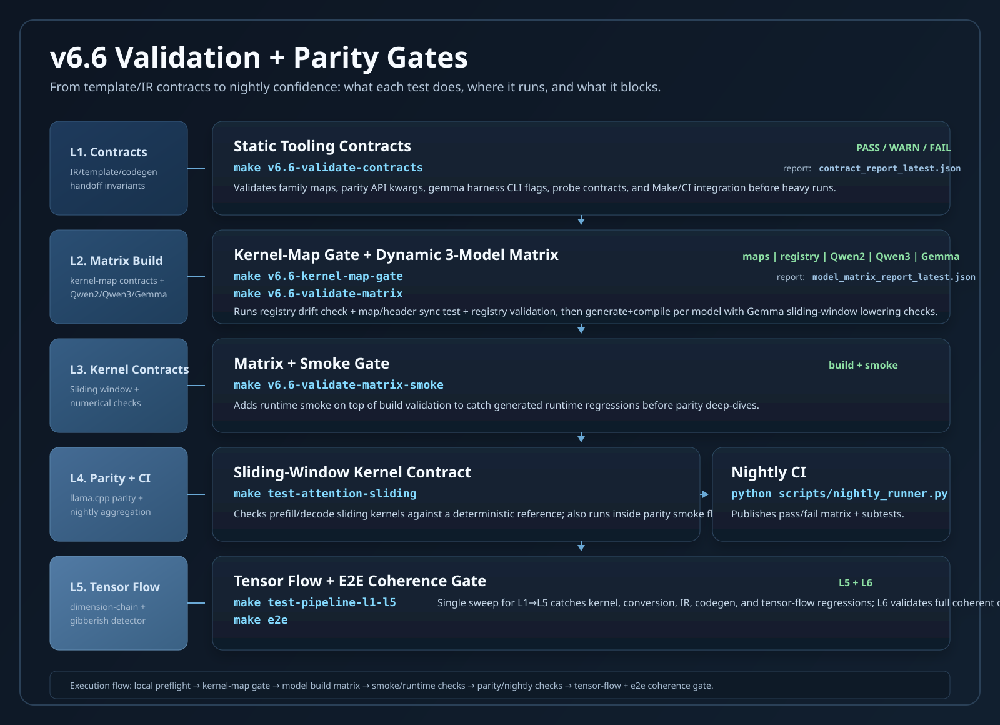
Artifact Lineage (Who Produces What)
For fast debugging, think in artifact lineage: report JSON -> producer script -> upstream artifact input.
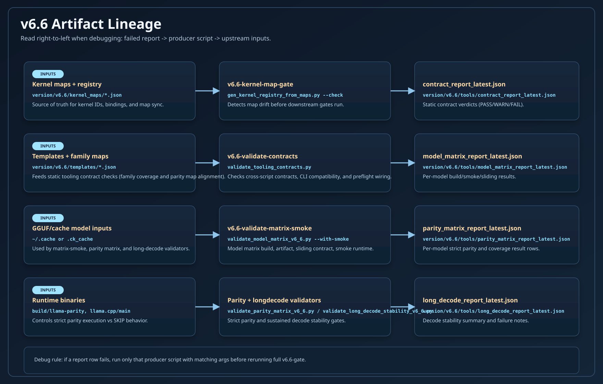
Status Semantics
Gate status words are shared, but strictness is configurable. Use this table as operational truth.
| Status | Operational Meaning | Effect in Strict Gate |
|---|---|---|
| PASS | Contract/rule satisfied | Continues |
| WARN | Potential drift, still executable | Can fail when strict mode is enabled |
| SKIP | Validation not run (runtime/input unavailable) | Fails when --require-all is active |
| FAIL | Contract violation or runtime error | Stops gate immediately |
v6.6 Evolution Timeline
This timeline uses explicit dates so later readers can reconstruct why gate behavior changed and what constraints were introduced.
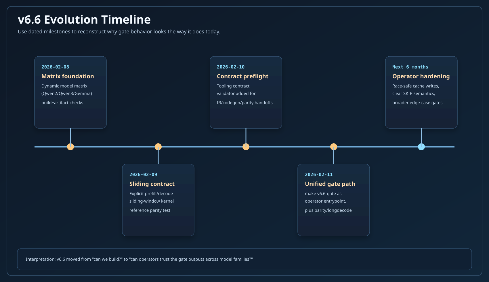
Edge-Case Coverage to Preserve
This matrix captures edge cases that matter most for keeping v6.6 stable over time.
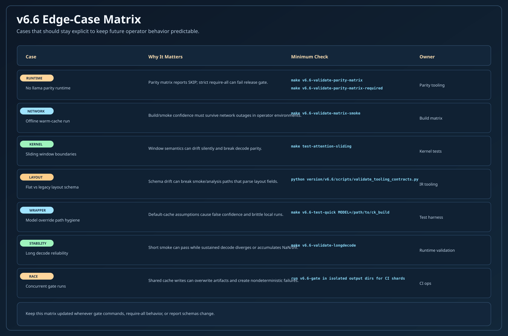
High-Value Test Cases and Edge Cases
- No parity runtime installed: verify expected
SKIPpath and explicit failure path for required parity mode - Offline cached model flow:
v6.6-validate-matrix-smokeshould pass when cache is warm and network is unavailable - Sliding-window boundaries: validate
sliding_window = -1, 0, 1, > seq_lenfor both prefill and decode - Model override hygiene: wrappers passing
--model/--model-dirmust avoid hidden default-cache behavior - Layout compatibility: ensure flat
memory.weights.entriesand legacy formats both remain parseable where needed - Concurrent gate runs: protect shared cache outputs from cross-run artifact corruption
- Long decode reliability: enforce minimum decode-run count and stable no-NaN/no-Inf summary checks
Six-Month Operator Memory Card
This card is intentionally redundant. If you read only one visual after a long break, read this one.
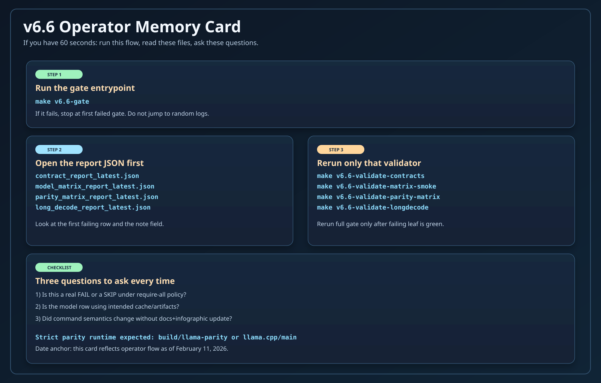
Kernel AMP Strategy
AMP here means automatic mixed precision per operation. It is not the GPU-style AMP most people know. In v6.6, AMP decides whether each op runs on FP32 activations or Q8 activations based on quant summary, template flags, and kernel availability.

Templates to IR
Templates are architecture-level graphs. They define the op sequence and can optionally provide kernel overrides, but the IR builder still resolves the final kernel IDs from the registry based on quantization and availability.

Template Mechanics (How Ops Are Chosen)
Templates are declarative. They list ops in order and set flags. The IR builder interprets those ops, then resolves kernels using the registry. Templates may provide targeted kernel overrides (for stability or parity), but they never contain function pointers or memory layout details.
Example Template Snippet
{
"name": "qwen3",
"flags": {
"use_qk_norm": true,
"prefer_fp32_logits": false
},
"block_types": {
"decoder": {
"body": { "ops": ["attn_norm", "qkv_proj", "qk_norm", "rope_qk", "attn", "out_proj", "residual_add",
"ffn_norm", "mlp_gate_up", "silu_mul", "mlp_down", "residual_add"] }
}
}
}
IR1 builder expands this into concrete ops, assigns IDs, and attaches dataflow.
Why IR1 Exists
IR1 is the validation and contract layer. It ensures the template ops are valid, mapped, and supported before we allocate memory or emit C. This is the earliest point to fail fast.
IR1 Responsibilities
- Validate template ops are mapped to kernel families
- Check kernel availability in the registry
- Attach dataflow edges (op IDs → inputs)
- Record kernel IDs without allocating memory
Implementation: version/v6.6/scripts/build_ir_v6_6.py
Kernel Maps + Registry
Kernel maps define how kernels are registered and discovered. IR never hardcodes kernels — it resolves them from the registry based on kernel IDs and supported dtypes.
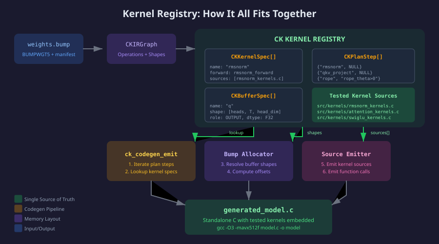
Kernel Map → C Signature
Kernel maps describe the C function signature, expected dtypes, and buffer roles. The IR lowerer wires input/output pointers and sizes based on this schema.

Example Kernel Map Snippet
{
"id": "gemv_q8_0",
"signature": "void gemv_q8_0(const void* w, const float* x, float* y, int m, int k)",
"quant": { "weight": "q8_0", "activation": "fp32" },
"buffers": {
"w": { "role": "weight" },
"x": { "role": "activation", "buffer": "main_stream" },
"y": { "role": "activation", "buffer": "main_stream" }
}
}
Kernel Map JSON → C Args (Concrete Mapping)
| Kernel Map Field | Meaning | Lowered/C Code |
|---|---|---|
inputs[].name |
Argument name in C signature | Pointer emitted by IR lower (e.g., model->q_scratch) |
inputs[].dtype |
Expected activation dtype | Kernel variant selection (fp32 vs q8) |
outputs[].name |
Output buffer label | Pointer emitted by IR lower |
params[].name |
Scalar arg (dims, stride) | Literal value in call |
Example Kernel Map Entry
{
"id": "embedding_forward_q8_0",
"inputs": [{ "name": "tokens", "dtype": "int32", "shape": ["T"] }],
"outputs": [{ "name": "output", "dtype": "fp32", "shape": ["T","E"] }]
}
Lowered call will pass token_ids and embedded_input pointers.
See: version/v6.6/kernel_maps/embedding_forward_q8_0.json
Producer vs Consumer (Plain Language)
In this page, producer and consumer are data-flow terms, not people. A producer writes a value/buffer/artifact. A consumer reads it in the same stage or the next stage.
| Context | Producer | Consumer | What It Means |
|---|---|---|---|
| Stage handoff | Current stage script writes JSON/C artifact | Next stage script reads that artifact | Example: build_ir_v6_6.py produces lowered_decode_call.json; codegen_v6_6.py consumes it |
| IR op graph (IR1) | Earlier op writes named outputs | Later op references those outputs via dataflow.inputs |
If op 13 has "q": 12, op 12 is producer of q, op 13 is consumer of q |
| Kernel call contract | outputs[] args in kernel map |
inputs[] args in kernel map |
Kernel map defines who writes and who reads for each call argument |
| Memory planner | Logical buffer assignment for produced tensors | Later calls reading same logical value | Planner decides where produced data lives (scratch/main/KV) so consumers can read it safely |
| Codegen/runtime | Lowered call IR produces concrete call args in C | Compiled runtime executes calls in order | Codegen does not invent producers/consumers; it emits what IR already resolved |
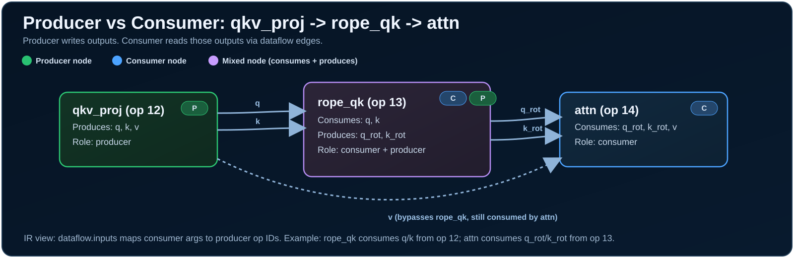
How to Read One Dataflow Edge
{
"op_id": 12,
"op": "qkv_proj",
"outputs": { "q": "...", "k": "...", "v": "..." }
}
{
"op_id": 13,
"op": "rope_qk",
"dataflow": { "inputs": { "q": 12, "k": 12 } }
}
Interpretation: op 12 produces q/k; op 13 consumes those outputs and produces rotated q/k for the next consumer (usually attention).
When QKV "Split" Happens (Head Handling)
Short answer: in v6.6, split happens during Q/K/V projection itself (head-major outputs), not as a separate "split kernel" after one big projection.
| Stage | What Happens | Shape Intent |
|---|---|---|
| Q/K/V projection | IR emits q_proj, k_proj, v_proj (or fused head-major QKV in selected paths). |
q: [H, T, AD], k/v: [KV, T, AD] (already split by heads) |
| QK norm (optional) | qk_norm runs on projected Q/K. |
Same head-major layout, normalized in place |
| RoPE | rope_qk rotates Q and K only. |
Q/K stay head-major; V is unchanged |
| Attention | attention_forward_*_head_major_gqa_* consumes Q/K/V and computes attention. |
Kernel loops all query heads internally and maps to KV heads via GQA |
Do We Do QKV + RoPE "All At Once"?
Not in the default conservative v6.6 path.
- Q, K, V are produced first (three ops or a selected fused QKV op).
- RoPE runs after Q/K exist, before attention.
- Attention kernel then handles head iteration and GQA mapping internally.
A sliding-window variant uses the same contract and adds sliding_window as an extra runtime parameter.
Kernel-Level Head Mapping (What "Automatic" Means)
Inside attention kernels, heads are iterated in-kernel and mapped to KV groups:
for (h = 0; h < num_heads; ++h) {
kv_head = h * num_kv_heads / num_heads; // GQA mapping
... attention for this head ...
}
Caller still provides num_heads, num_kv_heads, head_dim, and buffers. The kernel does not infer model dims.
References
version/v6.6/kernel_maps/attention_forward_causal_head_major_gqa_flash_strided.jsonversion/v6.6/kernel_maps/attention_forward_causal_head_major_gqa_flash_strided_sliding.jsonsrc/kernels/attention_kernels.csrc/kernels/attention_kernels_sliding.c
IR1 to IR Lowering
IR1 is a declarative graph. IR2 adds scheduling and kernel selection details. The lower stages compute memory layout, resolve offsets, and produce call arguments for codegen.
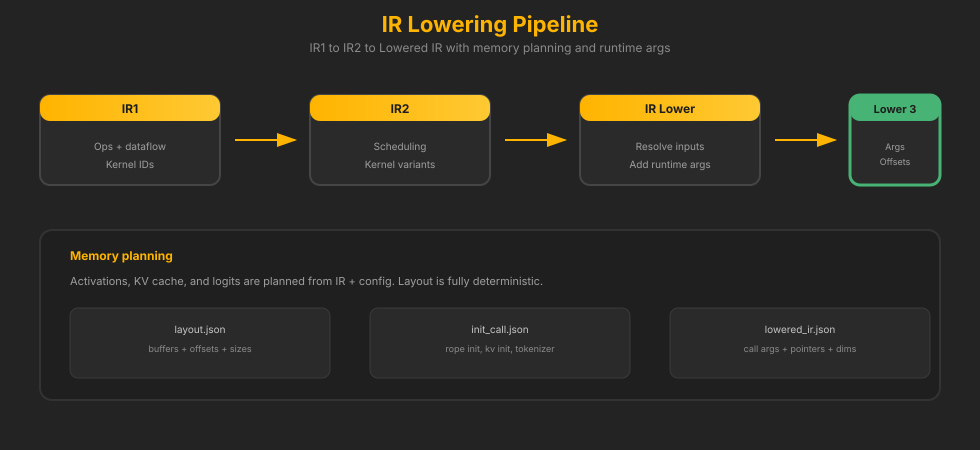
What IR2 Does (Optional Optimizations) Conservative
IR2 is the optimization staging area. This is where we can apply fusions, reorder safe ops, or choose specialized kernels. In v6.6, most of this is intentionally conservative or disabled to avoid behavioral drift.
IR2 Focus
- Optional fusion patterns (e.g., norm + QKV)
- Kernel variant selection for prefill vs decode
- Keeping behavior stable while enabling future speedups
IR2 Fusions (Currently Disabled / Conservative)
version/v6.6/kernel_maps/mega_fused_attention_prefill.jsonversion/v6.6/kernel_maps/mega_fused_outproj_mlp_prefill.jsonversion/v6.6/kernel_maps/mega_fused_attention_decode_q5_0.json
These exist in the registry but are kept conservative in v6.6 to avoid parity drift. Some require head-major constraints or rely on quantized activation contracts that are still being stabilized.
Fusion vs Unfused (One Attention Block)

Dataflow Stitching (How IR Connects Ops)
IR1 uses op IDs and named outputs. Each op declares its inputs as outputs of previous ops. The dataflow tracker builds a graph, and the memory planner assigns buffers to each edge.

IR1 Example (Stitching)
{
"op_id": 12,
"op": "qkv_proj",
"outputs": { "q": "q_scratch", "k": "k_scratch", "v": "v_scratch" },
"dataflow": { "inputs": { "x": 11 } }
}
{
"op_id": 13,
"op": "rope_qk",
"dataflow": { "inputs": { "q": 12, "k": 12 } }
}
Pipeline Outputs (Artifacts)
Each stage writes explicit artifacts. These files are the contract between stages and are the inputs for debugging tools.
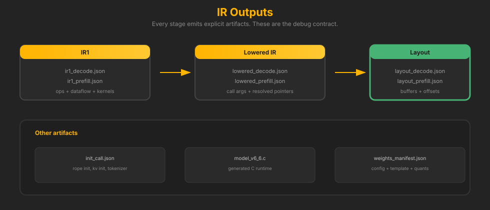
IR File Schema (Quick Reference)
| File | Key Fields | Purpose |
|---|---|---|
ir1_decode.json |
ops, dataflow, kernel |
Validated op graph, kernel IDs, dataflow edges |
lowered_decode.json |
operations, args, config |
Call-ready args, resolved dims, runtime pointers |
layout_decode.json |
memory.weights, memory.activations |
Buffer offsets and sizes for weights and activations |
init_call.json |
ops, params |
One-time init kernels (RoPE cache, KV init) |
JSON Walkthrough
This diagram shows how template → IR1 → lowered IR → layout relate. It is the quickest way to understand where each value comes from.
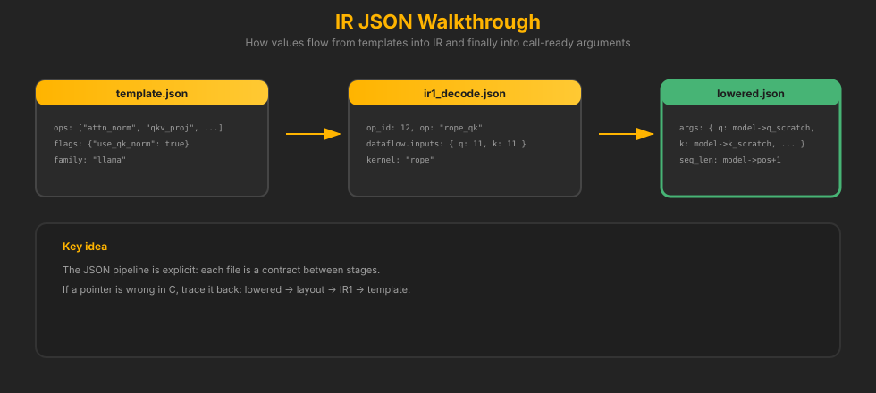
IR Timeline (Why Each Stage Exists)

Real Snippet (From Model Cache)
This is a real IR1 + lowered op pulled from a v6.6 model cache (Qwen2‑0.5B). It shows how the same op is represented before and after lowering.
IR1 (before lowering)
{
"op_id": 0,
"kernel": "embedding_forward_q8_0",
"op": "dense_embedding_lookup",
"section": "header",
"layer": -1,
"dataflow": {
"inputs": { "token_ids": { "from": "external:token_ids", "dtype": "i32" } },
"outputs": { "out": { "dtype": "fp32" } }
},
"weights": {
"token_emb": { "dtype": "q8_0", "offset": 496, "size": 144643072 }
}
}
Lowered (call-ready)
{
"kernel": "embedding_forward_q8_0",
"function": "embedding_forward_q8_0",
"weights": {
"token_emb": { "ptr_expr": "bump_weights + 0", "dtype": "q8_0" }
},
"activations": {
"tokens": { "ptr_expr": "activations + 16384", "dtype": "int32" }
},
"outputs": {
"output": { "ptr_expr": "activations + 20480", "dtype": "fp32" }
}
}
Scratch vs Persistent Buffers
Generated C has two concerns: logic (which kernel to call) and memory (where buffers live). Scratch buffers are reused aggressively, while persistent buffers (KV cache, logits) are stable across steps.
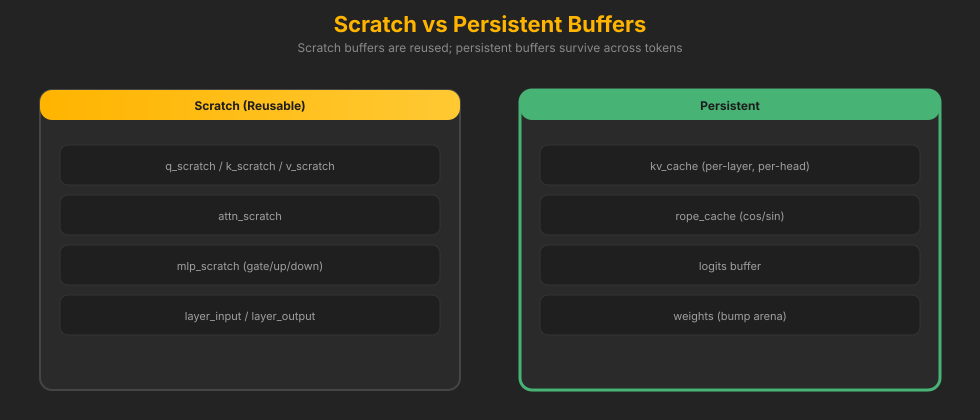
Logic vs Memory
We separate logic (what to run) from memory (where it lives). This is why the pipeline stays deterministic and codegen can stay dumb.

Codegen Is Dumb (By Design)
Codegen only prints what the lowered IR says. This keeps C output clean and predictable. It also makes failures traceable to the IR builder, not the generator.
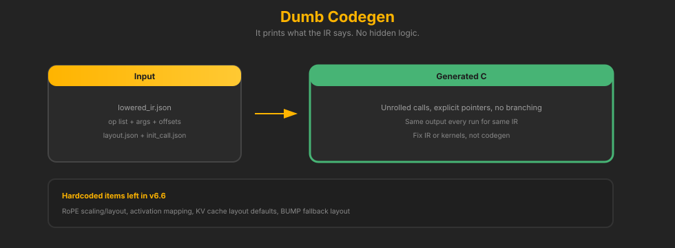
Example Generated C Call
/* Lowered IR says: gemv_q8_0(w2, x, y, m, k) */
gemv_q8_0(
model->bump + W_L2_MLP_DOWN, // weight pointer (from layout)
model->layer_input, // activation pointer
model->mlp_scratch, // output scratch
INTERMEDIATE_SIZE, // m
EMBED_DIM // k
);
Codegen does not decide kernels. It emits the call with exact pointers and sizes from IR + layout.
Why C (Not Rust) for Runtime Control
The runtime is intentionally written in C so we control both the call logic and the memory layout without compiler-owned decisions. C gives explicit control over alignment, buffer reuse, and function dispatch — exactly what we need for deterministic, cache-aware inference.
View This in the IR Visualizer
The IR visualizer can load IR1, lowered IR, and layouts directly from a model cache directory.
Quick Start
python version/v6.6/tools/open_ir_visualizer.py --list python version/v6.6/tools/open_ir_visualizer.py gemma3 # Or generate only (no browser): python version/v6.6/tools/open_ir_visualizer.py --generate gemma3 # Generate with decode profile artifacts: python version/v6.6/tools/open_ir_visualizer.py --generate gemma3 --with-profile --force-compile # Generate with probes (memory sign-off + perf stat/flamegraph + perf budgets): python version/v6.6/tools/open_ir_visualizer.py --generate gemma3 --with-probes --force-compile
This generates ir_report.html inside the model’s ck_build directory.
For cached model aliases that are not directly runnable checkpoints, pass
--run-model hf://.../model.gguf. Example for Gemma:
--run-model hf://unsloth/gemma-3-270m-it-GGUF/gemma-3-270m-it-Q5_K_M.gguf --chat-template none.
Manual Load
Open version/v6.6/tools/ir_visualizer.html in a browser and load:
ir1_decode.json/ir1_prefill.jsonlowered_decode_call.json/lowered_prefill_call.json(orlowered_*.jsonfallback)layout_decode.json/layout_prefill.jsonweights_manifest.json(optional but recommended)profile_summary.json(optional)
Recommended Run Flow (Baked Report)
# 1) List models that already have IR artifacts python version/v6.6/tools/open_ir_visualizer.py --list # 2) Open an interactive report in your browser python version/v6.6/tools/open_ir_visualizer.py Qwen--Qwen3-0.6B-GGUF # 3) Generate report only (no auto-open) python version/v6.6/tools/open_ir_visualizer.py --generate Qwen--Qwen3-0.6B-GGUF # Optional: custom output path python version/v6.6/tools/open_ir_visualizer.py --generate Qwen--Qwen3-0.6B-GGUF --output /tmp/ir_report.html # One-command rich report (profile + probes + embedded artifacts) python version/v6.6/tools/open_ir_visualizer.py \ --generate Qwen--Qwen3-0.6B-GGUF \ --with-probes --force-compile \ --output /tmp/ir_report.html
By default this writes ir_report.html in the model's ck_build directory.
The generated report now embeds decode/prefill IR data so it opens as a standalone artifact.
Open the Generated Report
# Linux desktop xdg-open ~/.cache/ck-engine-v6.6/models/Qwen--Qwen3-0.6B-GGUF/ir_report.html # Or run auto-open directly (no separate xdg-open step) python version/v6.6/tools/open_ir_visualizer.py Qwen--Qwen3-0.6B-GGUF
If your environment has no GUI, copy the generated ir_report.html to a machine with a browser and open it there.
How to Read the Viewer in 10 Minutes
| Panel | What to Verify | Bug Signal to Watch |
|---|---|---|
| Operator Snapshot | Mode (decode/prefill), required file coverage, warnings, runbook |
Missing required files, unexpected warnings, wrong model metadata |
| Memory Layout | Weights/activations sizes and region bars match expectation | Offsets jump backward, suspicious tiny/huge buffers, KV cache missing |
| Kernel Flow | Op order is coherent; expected kernels appear per layer | Missing op families, wrong kernel variants, layer count drift |
| Quantization Audit | Dtype-to-kernel mapping consistency (q8_0 -> q8 kernels, etc.) |
Dtype mismatch rows, unexpected fp32 fallback in quant path |
| Dataflow Graph | Producer/consumer edges for q/k/v, residual, and MLP chain | Uninitialized inputs, missing producer IDs, broken residual flow |
| Profile | Hotspots align with architecture expectations | Sudden hotspot shift without a deliberate kernel/runtime change |
Producer/Consumer Tracing (Concrete Recipe)
- Load report and select the right mode (
decodeorprefill). - Open Dataflow Graph, filter to layer/op of interest (e.g.,
rope_qk,attn). - Read the op row: find
inputswithfrom_opandfrom_output. - Jump to that producer op ID and confirm it emits the named output with expected dtype.
- Cross-check memory implications in Memory Layout (buffer exists, size and role are sane).
Rule of thumb: every consumer input should trace to exactly one intentional producer path. If you cannot explain the edge in one sentence, treat it as suspect.
When Tests Pass But You Still Suspect a Bug
- Decode vs prefill divergence: same op family but different kernel variant or dtype without explicit reason
- Residual path anomalies: extra/missing residual save-add pair in one layer
- Silent dtype drift: quantized weights but fp32-heavy execution path in lowered calls
- Memory planner smell: unusually large scratch growth or KV cache footprint jump
- Graph coherence: orphan node/edge patterns that suggest missing producer wiring
These are high-signal human checks that catch regressions before they become parity failures.
Operator Workflow (Daily Use)
# Gate first make v6.6-gate # For release-level strictness make v6.6-validate-parity-matrix-required # Then inspect visual report for topology/memory sanity python version/v6.6/tools/open_ir_visualizer.py Qwen--Qwen3-0.6B-GGUF
What AMP Means Here
In v6.6, AMP means automatic mixed precision per op. It decides the activation dtype each kernel uses. For example, Qwen2/Qwen3 can use Q8 activations for GEMV/GEMM, while Gemma may prefer FP32 logits for stability. This is not GPU AMP — it is a CPU‑oriented kernel selection policy.
Remaining Hardcoded Assumptions
These are known constraints in v6.6. They are documented so v7 can cleanly remove them.
| Area | Current Behavior | Risk |
|---|---|---|
| RoPE scaling | No scaling types (linear, dynamic, yarn) yet | Context extension models may diverge |
| RoPE layout | Assumes half-dim cache layout | Models with rotary_dim or interleaved layouts can break |
| Activation mapping | silu_mul maps to swiglu by default | Non-SwiGLU models need explicit hidden_act mapping |
| KV cache layout | Head-major, static layout | Paged or alternative KV layouts not supported |
| BUMP defaults | Fallback layout constants | Should fail if converter omits layout |
Templates and IR are dynamic by design. The generated C is the stable artifact that can be stripped into a lightweight runtime.